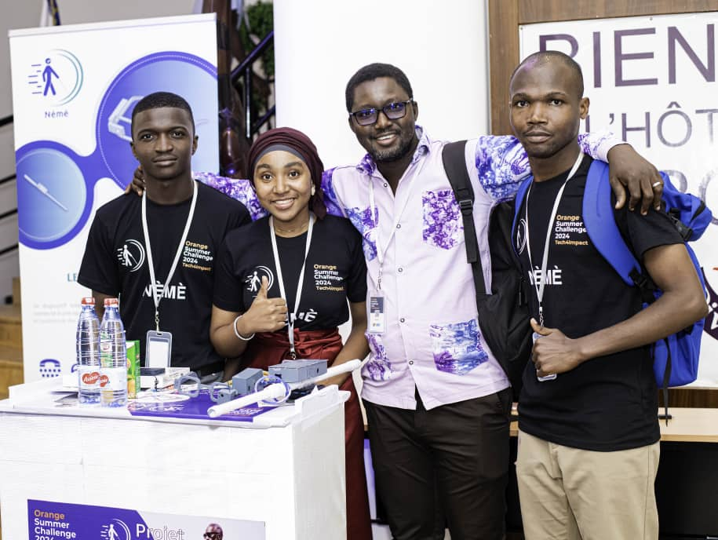
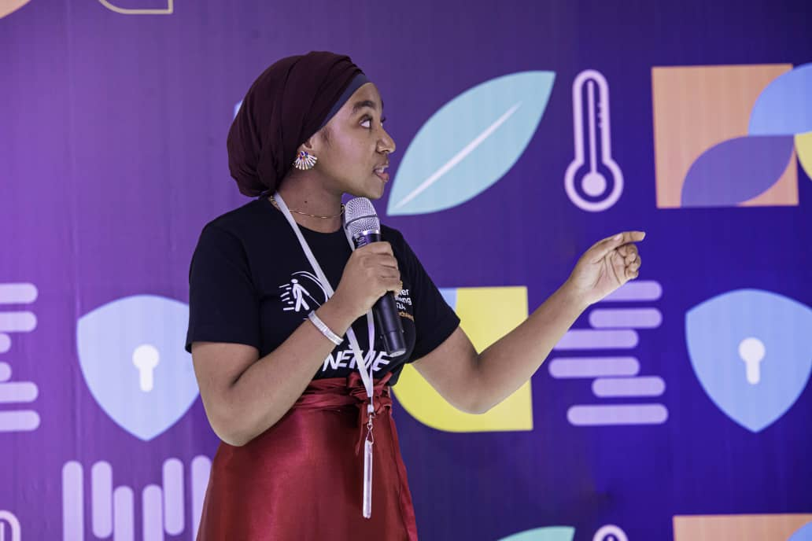
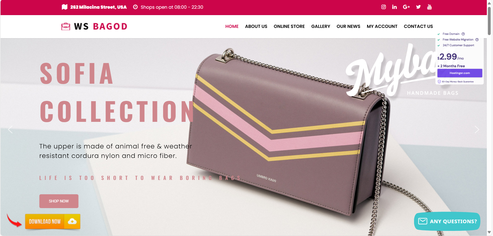
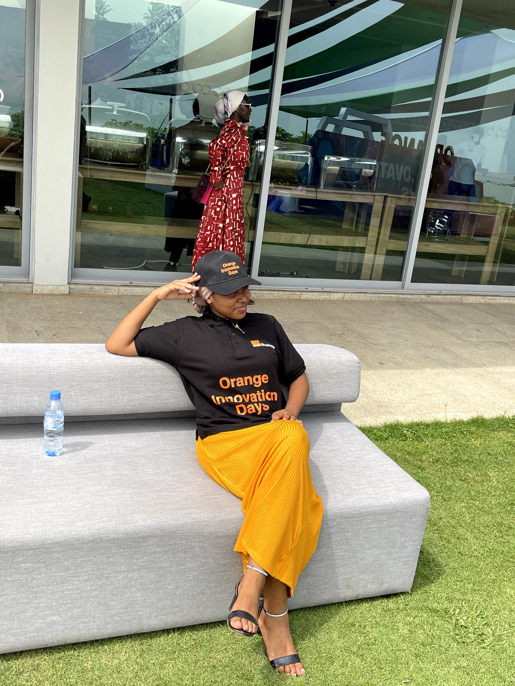
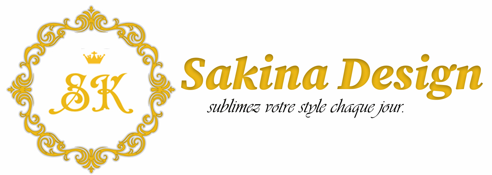

Nèmè
Nèmè est un dispositif intelligent destiné à faciliter la mobilité des personnes malvoyantes grâce
à des lunettes connectées, une canne électronique et une application mobile. Le système offre un
guidage vocal en temps réel et permet aux proches de suivre l’utilisateur à distance.
Ce projet a été primé lors de l'Orange Summer Challenge, récompensant son impact social et son innovation..
Voir le projet

Orange Summer Chalenge 2024
J’ai participé à l’Orange Summer Challenge, un programme intensif d’innovation
où j’ai contribué à la conception du projet Nèmè, un dispositif d’assistance aux malvoyants.
En tant que designer, j’ai travaillé sur l’expérience utilisateur, le design du prototype et
la présentation du projet.
Notre équipe a été primée pour l’innovation et l’impact social de notre solution...
Voir le projet

MediManager
MediManager est une application de gestion pharmaceutique destinée aux pharmacies et structures de santé.
Elle permet de gérer efficacement les stocks de médicaments, les ventes, les commandes fournisseurs et
les alertes de péremption.
Ce projet vise à optimiser la gestion des médicaments et à réduire les pertes tout en facilitant le
travail des professionnels de santé.
Voir le projet

ComoShop
ComoShop est un site web e-commerce conçu pour proposer une sélection raffinée de produits faits main,
allant des sacs et bijoux aux cosmétiques. Développé par mes soins, ce site vise à valoriser la créativité
artisanale comorienne tout en offrant une expérience d'achat fluide, moderne et responsive. Chaque article
est choisi avec soin pour répondre aux besoins d’une clientèle à la recherche d’authenticité, de style et de qualité..
Voir le projet

Evenement & expositions
Participation à l’Orange Innovation Days avec présentation du projet Nèmè (primé),
à l’Afrinov Tech Expo pour valoriser mes initiatives tech, et au Salon des Étudiants Entrepreneurs avec
le projet Nèmè
Voir le projet

Sakina
Sakina est une marque artisanale qui propose des sacs faits main, alliant élégance,
originalité et savoir-faire. Chaque pièce reflète un style unique et authentique,
pensé pour sublimer le quotidien avec raffinement.
Voir le projet